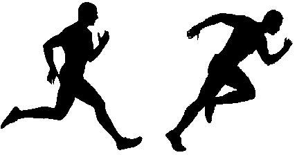
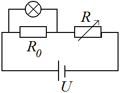
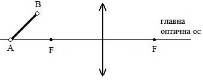

Задача 1. Двете части на задачата са независими!
Част 1. Състезателите Двама спринтьори се състезават в бягане на 100 m. Първият се ускорява за време t1 = 2 s, достигайки максималната си скорост v1max, която поддържа през останалата част от трасето. Вторият се ускорява за време t2 = 4 s, достигайки максималната си скорост v2max, която поддържа до края на състезанието. Ако двамата тръгват от покой и пристигат едновременно, изминавайки цялото разстояние за време t = 12 s.

а) Какви са ускоренията a1 и a2 съответно на първия и втория спринтьор, с които те се движат в началото на състезанието? (3 точки)
б) Какви са максималните скорости v1max и v2max на двамата състезатели? (2 точки)
в) Кой от двамата състезатели ще бъде пред другия след като изтече половината от времето t? (2 точки)
Част 2. Кораб и лодка

Дълъг туристически кораб, който се движи с ускорение a1 = 0,2 m/s2 се разминава с лодка, която се движи в противоположната посока с ускорение a2 = 0,05 m/s2. И двата плавателни съда се движат равноускорително. В момента на срещата скоростта на кораба е v1 = 3 m/s, а скоростта на лодката е v2 = 1 m/s. Ако разминаването между лодката и кораба трае t = 10 s, пресметнете колко е дължината на кораба. Дължината на лодката се пренебрегва. (3 точки)
Задача 2. Двете части на задачата са независими!
Част 1. Две крушки достигат нормалните си работни мощности P1 = 20 W и P2 = 80 W, ако поотделно всяка от тях се включи към източник на напрежение от 12 V. а) Намерете съпротивлението на всяка от крушките. (1 точка) б) С каква мощност ще светят крушките, ако двете се свържат последователно към същия източник? Изразете отговора в проценти спрямо нормалната работна мощност на всяка крушка. (4 точки)
Приемете, че съпротивленията на крушките са постоянни.
Част 2. Резистор със съпротивление R0 = 10 $\Omega$ и реостат с променливо съпротивление са свързани последователно към източник на напрежение U = 24 V.
a) Какво трябва да е съпротивлението R на реостата, за да може напрежението в краищата на резистора да е U0 = 12 V? (1 точка)
1 Нека успоредно на резистора със съпротивление R0 се свърже електрическа крушка - Фиг.1. Крушката има нормална работна мощност P = 12 W, която се достига при напрежение от 12 V.
б) Какво е съпротивлението на крушката? (1 точка) в) С каква мощност ще свети крушката след като се свърже успоредно на резистора? (3 точки)
Приемете, че съпротивлението на крушката е постоянно.
 Фиг. 1
Задача 3. Двете части на задачата са независими!
Част 1. Бягащата свещ Свещ е плътно допряна до леща с фокусно разстояние f = 30 cm. В даден момент свещта започва да се отдалечава от лещата със скорост v = 5 cm/s. След известно време се появява действителният образ на свещта. Събирателна или разсейвателна е лещата? Обосновете се. Пресметнете след колко време се появява действителният образ на свещта. (3 точки)
Част 2. Полегнали източници На Фиг. 2 и Фиг. 3 са показани събирателна леща и предмет AB, който е поставен пред нея на разстояние по-голямо от фокусното. Постройте образа А1В1 на плоския предмет АВ в двата случая. Номерирайте и накратко опишете с думи последователността на геометричните построения, които правите. Направете ясни чертежи. (7 точки)

 Фиг. 2 Фиг. 3
Фиг. 2 Фиг. 3
Упътване: За решаването на задачата може, но не е задължително да използвате следното свойство. Когато падащите върху събирателна леща сноп успоредни лъчи не са успоредни на главната оптична ос, след пречупването си от лещата те се събират в точка, която лежи върху права,която минава през фокуса на лещата и е перпендикулярна на главната оптична ос
 Фиг. 4
Фиг. 4